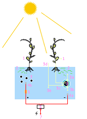
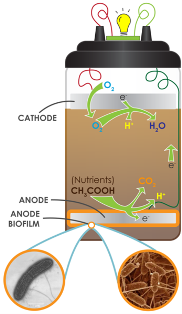

Definition
A microbial fuel cell is a device that converts chemical energy to electrical energy by the catalytic reaction of microorganisms.
A typical microbial fuel cell consists of anode and cathode compartments separated by a cation (positively charged ion) specific membrane. In the anode compartment, fuel is oxidized by microorganisms, generating electrons and protons. Electrons are transferred to the cathode compartment through an external electric circuit, while protons are transferred to the cathode compartment through the membrane. Electrons and protons are consumed in the cathode compartment, combining with oxygen to form water.
More broadly, there are two types of microbial fuel cell: mediator and mediator-less microbial fuel cells.
Mediator microbial fuel cell
Most of the microbial cells are electrochemically inactive. The electron transfer from microbial cells to the electrode is facilitated by mediators such as thionine, methyl viologen, methyl blue, humic acid, neutral red and so on. Most of the mediators available are expensive and toxic.
Mediator-free microbial fuel cell

A Plant MFC(PMFC)
Mediator-free microbial fuel cells do not require a mediator but uses electrochemically active bacteria to transfer electrons to the electrode (electrons are carried directly from the bacterial respiratory enzyme to the electrode). Among the electrochemically active bacteria are, Shewanella putrefaciens, Aeromonas hydrophila, and others. Some bacteria, which have pili on their external membrane, are able to transfer their electron production via these pili.
Mediator-less microbial fuel cells can, besides running on wastewater, also derive energy directly from certain aquatic plants. These include reed sweetgrass, cordgrass, rice, tomatoes, lupines, and algae. These microbial fuel cells are called Plant Microbial Fuel Cells (Plant-MFC). Given that the power is thus derived from a living plant (in situ-energy production), this variant can provide extra ecological advantages.
Microbial electrolysis cell
A variation of the mediator-less MFC is the microbial electrolysis cells (MEC). Whilst MFC's produce electric current by the bacterial decomposition of organic compounds in water, MEC's partially reverse the process to generate hydrogen or methane by applying a voltage to bacteria to supplement the voltage generated by the microbial decomposition of organics sufficiently lead to the electrolysis of water or the production of methane. A complete reversal of the MFC principle is found in microbial electrosynthesis, in which carbon dioxide is reduced by bacteria using an external electric current to form multi-carbon organic compounds.
Soil-based MFC

A Soil Based MFC
Soil-based microbial fuel cells adhere to the same basic MFC principles as described above, whereby soil acts as the nutrient-rich anodic media, the inoculum, and the proton-exchange membrane (PEM). The anode is placed at a certain depth within the soil, while the cathode rests on top the soil and is exposed to the oxygen in the air above it.
Soils are naturally teeming with a diverse consortium of microbes, including the electrogenic microbes needed for MFCs, and are full of complex sugars and other nutrients that have accumulated over millions of years of plant and animal material decay. Moreover, the aerobic (oxygen consuming) microbes present in the soil act as an oxygen filter, much like the expensive PEM materials used in laboratory MFC systems, which cause the redox potential of the soil to decrease with greater depth. Soil-based MFCs are becoming popular educational tools for science classrooms.
Phototrophic biofilm MFC
Phototrophic biofilm MFCs(PBMFCs) are the one which make use of anode with a phototrophic biofilm containing photosynthetic microorganism like chlorophyta, cyanophyta etc., since they could carry out photosynthesis and thus they act as both producers of organic metabolites and also as electron donors.
Study conducted by David P.B.T.B. et al. reveals that PBMFCs could yield highest power density output and hence they could be promising prospects for real life application. Difficulties faced by researchers are increasing the power density and long-term performance so as to obtain a cost-effective MSC.